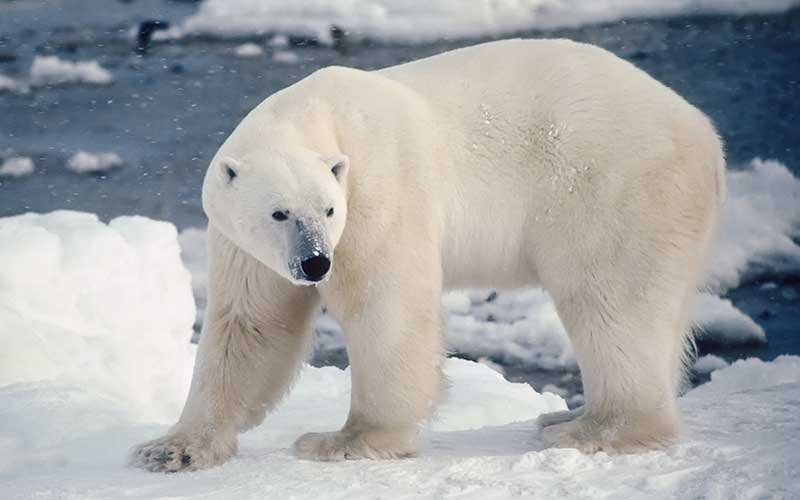

Si te preguntabas qué animales están en peligro de extinción, puede que este te extrañe por ser emblemático de Oceanía, concretamente de Australia.
El canguro es un animal australiano del cuál se come su carne y también se exporta a otros lugares para su consumo, así como objetivo de actividades turísticas, de la caza furtiva, etcétera. Además, a pesar de su caza, este marsupial sufre sobre todo los efectos del calentamiento global. Podría desaparecer en unos años, según expertos. Si las temperaturas siguiesen aumentando en los últimos años, los canguros podrían estar condenados a desaparecer en unos años si su población sigue descendiendo a este ritmo.
El oso polar u oso blanco

¿Cuáles son las especies animales en riesgo de extinguirse? Según muchos rankings que indican qué animales están en peligro de extinción, entre las principales especies en peligro de extinción, encontramos al oso polar u oso blanco. Este tipo de mamífero es una de las especies más amenazadas de la Tierra, y algunos no les pronostican más de un siglo de vida. La razón principal del peligro que corren los osos polares es el deshielo del Ártico o Polo Norte, su hábitat natural.
Se calcula que existen solamente algo más de 20.000 ejemplares.
Rinoceronte de Java
Seguimos esta lista de animales en peligro de extinción hablando sobre una especie de rinoceronte. Resulta muy dramática la situación en la que se encuentra el rinoceronte de Java, no solo porque ya quedan muy pocos ejemplares, sino por la razón principal que los empuja a su desaparición: la caza para convertirle en adorno o la creencia, en China y en culturas orientales, de que su cuerno tiene propiedades curativas. La caza, en general, tiene efectos muy negativos para los animales, más aún en determinadas especies. Los tigres